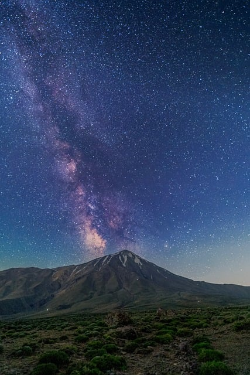

| Stephenson 2-18:,Vörös szuperóriás, nagysága: a napnak a kb. 2150-szerese, távolsága: kb. 19 000 fényév, érdekessége: fényév A Naprendszerbe helyezve a Szaturnusz pályájáig érne. | UY Scuti: Vörös szuperóriás, mérete:a napnak a kb. 1700-szorosa, távolság a földtől kb. 9500 fényév, érdekessége: Térfogatában körülbelül 5 milliárd Nap férne el. | VY Canis Majoris: Vörös hiperóriás, mérete: a napnak kb. 1420-szorosa, távolság a föld től: szoros kb. 3900 fényév érdekesség: Fénysebességgel közel 6 órába telne megkerülni. |